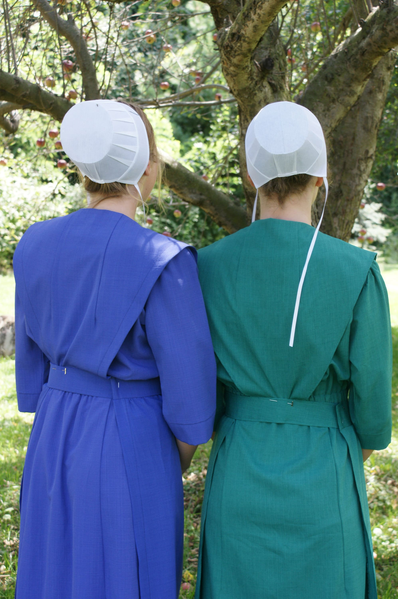
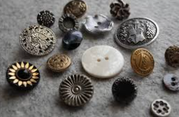
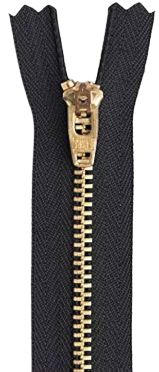
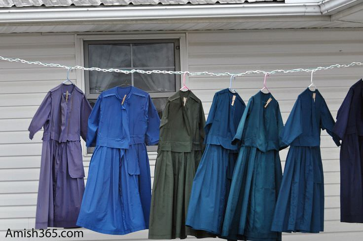
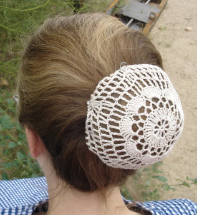

| Ordnung | Amish Clothing | Amish Timeline | Amish Words and Phrases | References |
|---|
The kapp is a simple white head covering worn by women in Amish households. This cap represents humility and submission to God's will. They start wearing their kapps at the age of 13. The shape of the kapp is determined by the Amish community each woman is from.

One distinct feature about Amish clothing is that it excludes the usage of buttons. Buttons are worldly, which contridicts the values of modesty that Amish communities poccess. By not wearing buttons Amish spread their message of simplicity.

Zippers are not commonly found on Amish clothing. Instead, snaps, hooks, and pins are used. Zippers are associated with speed and convenience and they are actually seen as flashy and mechanical. These qualities oppose the ideas of simplicity that Amish people poccess.

The color palette of Amish clothing is dull with the focus less on beauty and more on practicality. It shows the Amish's opposing beliefs towards luxury. Amish clothing does not include pattern drawings due to the unwanted attraction to oneself which goes against Amish morals. Having uniform clothing between all members of a group give a sense of community and shows shared values and identities.

Women in Amish communities are prohibited from cutting their hair. Their hair is usually styled in a bun, brain, or a simple hair style to avoid unwanted attention. Men seen with their hair cut short due to the little effort needed to work with it and manage it. Men will also grow beards but they will never grow mustaches.
